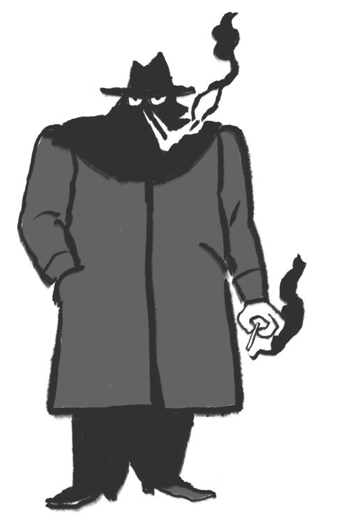
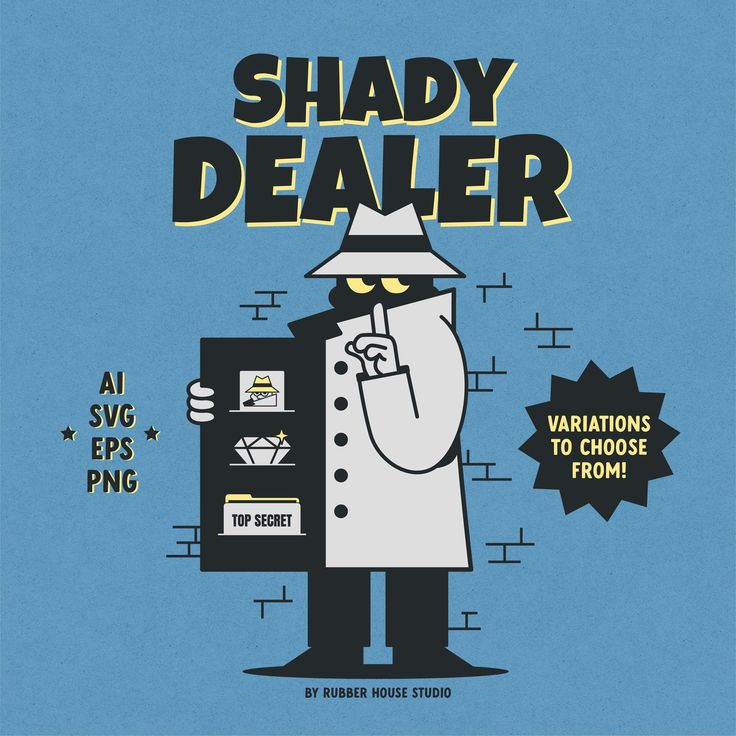

The Post-Quantum Post Office
A full-stack post-quantum capability: FIPS-203-exact ML-KEM compression RTL and a 31-module ML-DSA datapath in VHDL-2008, C protocol stacks that sign and encrypt IEC 61850 GOOSE/SV frames, and a KAT backbone tying every layer to the NIST reference via liboqs.

27 AUG 2026
VHDL-2008
The Cast of the Allegory
who carries what, and who is watchingKeyGen, Encaps, Decaps over Z₃₃₂₉. NTT/INTT, Barrett and Montgomery reduction, CBD noise sampling, exact-rounding Compress/Decompress.
ML-DSA datapath over Z₈₃₈₀₄₁₇ with twiddle tables. Leaf arithmetic passes its testbenches; C stack signs GOOSE/SV frames.

Records ciphertext today, decrypts it once Shor's algorithm runs at scale. The lab's qubit-shor-fpga project models why this program exists.

Demo-grade, not secure. Round-3 Kyber, stubbed entropy, Dilithium controllers still stubs. See section 04.